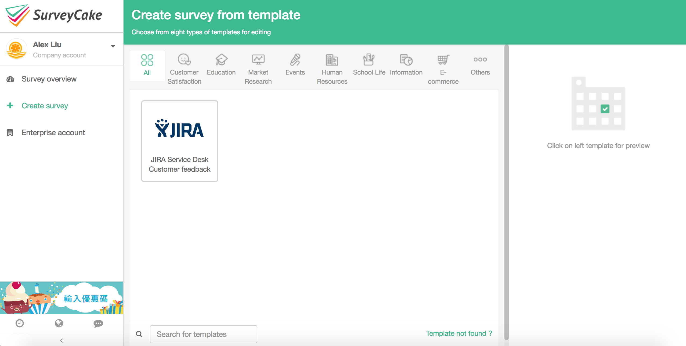
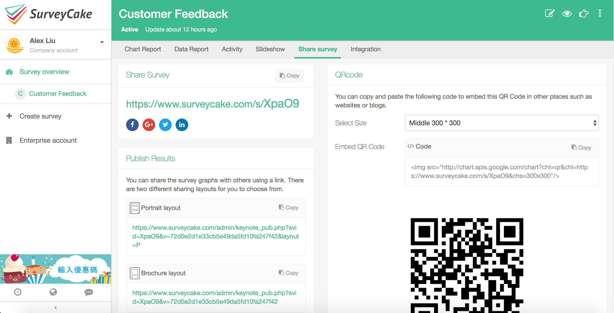

SurveyCake for JIRA Service Desk helps you to link your SurveyCake survey to your project as the customer feedback collector. Generate a new issue on your JIRA Service Desk project according to customer’s answer seamlessly.
Follow steps below to get start easily!
1.
Install the add-on first. Open "Project Setting" in the project. You will find a new link "SurveyCake Admin". Keep this open, you will need the token later.
3.
Create a new survey. Select “Template” and choose JIRA Service Desk.

4.
There will be two default questions in this template. You can add more questions up to your requirement. Meanwhile, you can set the color theme you like.

5.
Once finishing the creating process, you will see a unique URL for this survey. Click and have a preview.
6.
Click the “Integration” tab on sub-navi. Copy and paste the token you find on SurveyCake Admin in Project Setting page.
7.
Now, you have sucessfully link this survey to your JIRA Service Desk project. Everytime, when a issue is set resolved. An e-mail with your well-designed survey will send to your customer automatically.
8.
Your customer follows the instruction to fill out the survey.
9.
If your customer fills out an one-star in feedback. A new issue will be generated into your project automatically.
10.
See real-time statistic in your Report tab.